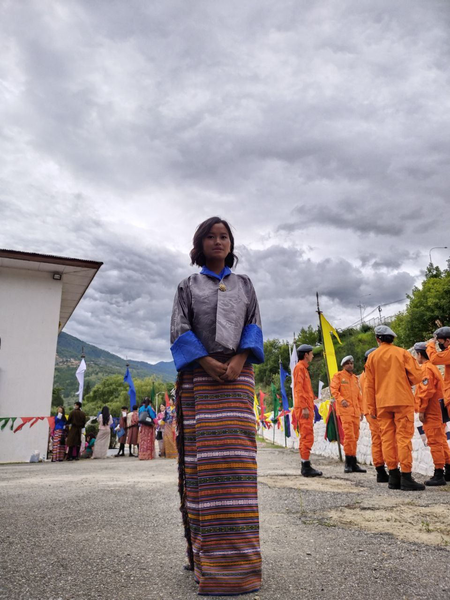

Hi, I am Sabita Mongar, nice to meet you!
I am a Graphic and Web Developer living in Thimphu, Bhutan.
I did diploma in Financial Management from Royal Institute
of Management.
Currently, I am doing a free Desuup course on Web Development to enhance my skills and knowledge.
Writing articles is hard but making up design is fun. I made this site so that companies can go
through my resume and hire me
as their Graphic or Web Developer. Nothing brings me more pleasure than making something out of nothing.
Even when the
results are far from my ideal expections. I find the whole ceremony of creativity complectly enthralling.
"Dare to dream,
then decide to do."
 Resume
Contact Me
Resume
Contact Me